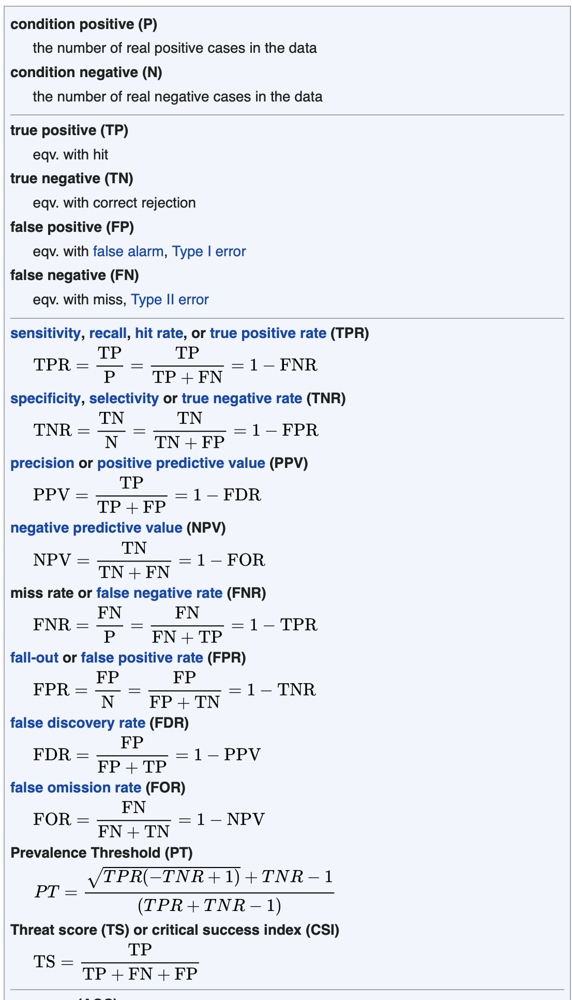

Inverting Conditional Probability
2026-03-18
Introduction
Plan
- We know how to compute \(\Pr(A \mid B)\) when we know \(\Pr(A \wedge B)\) and \(\Pr(B)\).
- But often what we’re given is a set of conditional probabilities, and we need to work out a different conditional probability.
- Today we’ll learn how to invert conditional probabilities.
Associated Reading
Odds and Ends, Chapter 8
Why Inverting Matters
A burglary was committed, and fingerprints resembling mine were found at the scene. Let:
- \(I\) = I am innocent
- \(F\) = these fingerprints were found
From forensic science, we can estimate \(\Pr(F \mid I)\): the chance that fingerprints like mine appear at a random crime scene where I’m innocent.
But what matters for criminal responsibility is \(\Pr(I \mid F)\). These are very different things, and conflating them is a serious error.
The Table Method
A Real-World Problem
- 3% of men have disease \(D\).
- A man you know has no special risk factors.
- There is a test for \(D\): among those with \(D\), 90% test positive; among those without, only 5% test positive.
This man tested positive. What is the probability he has disease \(D\)?

How to Solve These Problems
Build a table with:
- The possible states of the world on the rows (Has Disease / No Disease)
- The possible test results on the columns (Positive / Negative)
- Fill each cell with \(\Pr(\text{state} \wedge \text{result})\)
The key formula used throughout:
\[ \Pr(X \wedge Y) = \Pr(X) \times \Pr(Y \mid X) \]
Building the Table
Start with what we know:
- \(\Pr(\text{Disease}) = 0.03\), so \(\Pr(\text{No Disease}) = 0.97\)
- \(\Pr(\text{Positive} \mid \text{Disease}) = 0.9\), so \(\Pr(\text{Negative} \mid \text{Disease}) = 0.1\)
- \(\Pr(\text{Positive} \mid \text{No Disease}) = 0.05\), so \(\Pr(\text{Negative} \mid \text{No Disease}) = 0.95\)
Top-Left: Disease and Positive
\[ \Pr(\text{Disease} \wedge \text{Positive}) = 0.03 \times 0.9 = 0.027 \]
| Positive | Negative | |
|---|---|---|
| Disease | 0.027 | |
| No Disease |
Top-Right: Disease and Negative
\[ \Pr(\text{Disease} \wedge \text{Negative}) = 0.03 \times 0.1 = 0.003 \]
| Positive | Negative | |
|---|---|---|
| Disease | 0.027 | 0.003 |
| No Disease |
Bottom-Left: No Disease and Positive
\[ \Pr(\text{No Disease} \wedge \text{Positive}) = 0.97 \times 0.05 = 0.0485 \]
| Positive | Negative | |
|---|---|---|
| Disease | 0.027 | 0.003 |
| No Disease | 0.0485 |
Bottom-Right: No Disease and Negative
\[ \Pr(\text{No Disease} \wedge \text{Negative}) = 0.97 \times 0.95 = 0.9215 \]
| Positive | Negative | |
|---|---|---|
| Disease | 0.027 | 0.003 |
| No Disease | 0.0485 | 0.9215 |
Checking the Table
| Positive | Negative | |
|---|---|---|
| Disease | 0.027 | 0.003 |
| No Disease | 0.0485 | 0.9215 |
- Top row sums to 0.03 ✓ (that’s \(\Pr(\text{Disease})\))
- Bottom row sums to 0.97 ✓ (that’s \(\Pr(\text{No Disease})\))
- Everything sums to 1 ✓
Solving the Problem
We want \(\Pr(\text{Disease} \mid \text{Positive})\).
\[ \Pr(\text{Disease} \mid \text{Positive}) = \frac{\Pr(\text{Disease} \wedge \text{Positive})}{\Pr(\text{Positive})} \]
- \(\Pr(\text{Disease} \wedge \text{Positive}) = 0.027\)
- \(\Pr(\text{Positive}) = 0.027 + 0.0485 = 0.0755\)
\[ \Pr(\text{Disease} \mid \text{Positive}) = \frac{0.027}{0.0755} \approx 0.36 \]
The Surprising Upshot
- The test looked pretty reliable: 90% sensitivity, 95% specificity.
- But testing positive only raises the probability of disease from 3% to about 36%.
Why? Because the disease is rare. Even though the test is fairly reliable, false positives outnumber true positives when the base rate is low.
This pattern is general. When testing for rare conditions, a positive result is worrying but usually doesn’t mean you almost certainly have the disease.
General Strategy
The General A/B Strategy
For any problem where you want \(\Pr(A \mid B)\) from information of the form \(\Pr(B \mid A)\), \(\Pr(A)\), etc.:
- Make a \(2 \times 2\) table with \(A\), \(\neg A\) on rows and \(B\), \(\neg B\) on columns.
- Fill each cell using \(\Pr(X \wedge Y) = \Pr(X \mid Y)\Pr(Y)\).
- Add up rows to get \(\Pr(A)\), \(\Pr(\neg A)\); columns to get \(\Pr(B)\), \(\Pr(\neg B)\).
- Use the conditional probability formula to find the answer.
Example
Given:
- \(\Pr(A) = 0.6\)
- \(\Pr(B \mid A) = 0.3\)
- \(\Pr(B \mid \neg A) = 0.8\)
Find \(\Pr(B)\) and \(\Pr(A \mid B)\).
Setting Up
From negation: \(\Pr(\neg A) = 0.4\), \(\Pr(\neg B \mid A) = 0.7\), \(\Pr(\neg B \mid \neg A) = 0.2\).
| \(B\) | \(\neg B\) | |
|---|---|---|
| \(A\) | ||
| \(\neg A\) |
Filling In
\[\begin{align*} \Pr(A \wedge B) &= 0.3 \times 0.6 = 0.18 \\ \Pr(A \wedge \neg B) &= 0.7 \times 0.6 = 0.42 \\ \Pr(\neg A \wedge B) &= 0.8 \times 0.4 = 0.32 \\ \Pr(\neg A \wedge \neg B) &= 0.2 \times 0.4 = 0.08 \end{align*}\]
| \(B\) | \(\neg B\) | |
|---|---|---|
| \(A\) | 0.18 | 0.42 |
| \(\neg A\) | 0.32 | 0.08 |
Reading Off the Answers
| \(B\) | \(\neg B\) | |
|---|---|---|
| \(A\) | 0.18 | 0.42 |
| \(\neg A\) | 0.32 | 0.08 |
- \(\Pr(B) = 0.18 + 0.32 = 0.5\)
\[ \Pr(A \mid B) = \frac{0.18}{0.5} = 0.36 \]
Learning \(B\) drops the probability of \(A\) from 0.6 to 0.36.
Probability Rules
Why These Rules Work
It helps to see the algebra behind the table method.
The Negation Rule
\[ \Pr(\neg A) = 1 - \Pr(A) \]
This holds because \(A\) and \(\neg A\) are exclusive and exhaustive.
The Multiplication Rule
From the definition of conditional probability:
\[ \Pr(A \mid B) = \frac{\Pr(A \wedge B)}{\Pr(B)} \]
Multiply both sides by \(\Pr(B)\):
\[ \Pr(A \wedge B) = \Pr(A \mid B)\,\Pr(B) \]
This is what we use to fill in every cell of the table.
The Law of Total Probability
\(B\) is equivalent to \((A \wedge B) \vee (\neg A \wedge B)\), and those are exclusive, so:
\[ \Pr(B) = \Pr(B \mid A)\,\Pr(A) + \Pr(B \mid \neg A)\,\Pr(\neg A) \]
This is what lets us compute column totals from the cells.
Bayes’s Theorem
Combining the multiplication rule and total probability:
\[ \Pr(A \mid B) = \frac{\Pr(B \mid A)\,\Pr(A)}{\Pr(B \mid A)\,\Pr(A) + \Pr(B \mid \neg A)\,\Pr(\neg A)} \]
This is Bayes’s Theorem. It’s very famous, but note that it’s just a compact way of writing out what the table method does.
Using Bayes’s Theorem
\[ \Pr(A \mid B) = \frac{\Pr(B \mid A)\,\Pr(A)}{\Pr(B)} \]
The table method and Bayes’s theorem always give the same answer. Use whichever you find easier. For most exam problems, the table is clearer and less error-prone.
Base Rates
A Famous Example
A cab was involved in a hit-and-run at night. Two cab companies operate in the city: Green (85% of cabs) and Blue (15%).
A witness identified the cab as Blue. The court tested the witness under similar conditions: they correctly identified the color of cabs 80% of the time.
What is the probability the cab was Blue?
Setting Up the Table
Let \(\Pr(\text{Blue}) = 0.15\), \(\Pr(\text{Green}) = 0.85\).
From the reliability data:
- \(\Pr(\text{Looks Blue} \mid \text{Is Blue}) = 0.8\)
- \(\Pr(\text{Looks Blue} \mid \text{Is Green}) = 0.2\)
| Looks Blue | Looks Green | |
|---|---|---|
| Is Blue | \(0.15 \times 0.8 = 0.12\) | \(0.15 \times 0.2 = 0.03\) |
| Is Green | \(0.85 \times 0.2 = 0.17\) | \(0.85 \times 0.8 = 0.68\) |
The Answer
\[ \Pr(\text{Is Blue} \mid \text{Looks Blue}) = \frac{0.12}{0.12 + 0.17} = \frac{0.12}{0.29} \approx 0.41 \]
Even though the witness is 80% accurate, it is still more likely the cab was green.
The Lesson: Base Rates
- When one possibility is much more likely a priori, it takes strong evidence to overturn it.
- Here, Green cabs outnumber Blue 85:15. So even a fairly reliable witness can’t overcome that.
We often conflate the direction of recent evidence with its strength. The witness supports “Blue” over “Green”, but the overall balance still favors Green.
A Caution About This Example
The cab example assumes the witness’s accuracy is stated in a particular way. It could be read differently:
If “80% accurate” means:
- \(\Pr(\text{Correct} \mid \text{Looks Blue}) = 0.8\) (i.e., whenever they say “Blue”, they’re right 80% of the time)
Then the answer would simply be 0.8. English descriptions of accuracy data are often ambiguous. Always check exactly what you are being told.
General Lesson
- Base rates matter enormously.
- “This evidence supports \(H\)” is different from “\(H\) is now probably true.”
- Use the table method to avoid being misled by salient recent evidence.
Multiple Hypotheses
Worked Example: The Urn Problem
An urn contains 4 marbles, each either blue or green. The number of blue marbles is equally likely to be 0, 1, 2, 3, or 4. We draw 3 marbles with replacement and observe: blue, green, blue.
Question: What is the probability the urn contains exactly 1 blue marble?
Let \(H_k\) = the urn contains \(k\) blue marbles, for \(k = 0, 1, 2, 3, 4\).
Prior: \(\Pr(H_k) = \frac{1}{5}\) for each \(k\). We start with no reason to favour any particular composition.
Computing the Likelihoods
Let \(E\) = the sequence blue, green, blue. Since draws are independent (with replacement), we multiply:
\[\Pr(E \mid H_k) = \frac{k}{4} \times \frac{4-k}{4} \times \frac{k}{4} = \frac{k^2(4-k)}{64}\]
| \(H_k\) | \(k^2(4-k)\) | \(\Pr(E \mid H_k)\) |
|---|---|---|
| \(H_0\) | 0 | \(0\) |
| \(H_1\) | 3 | \(3/64\) |
| \(H_2\) | 8 | \(8/64\) |
| \(H_3\) | 9 | \(9/64\) |
| \(H_4\) | 0 | \(0\) |
Applying Bayes’s Theorem
\[\Pr(H_1 \mid E) = \frac{\Pr(E \mid H_1)\,\Pr(H_1)}{\displaystyle\sum_{k=0}^{4} \Pr(E \mid H_k)\,\Pr(H_k)}\]
Since all priors equal \(1/5\), the \(1/5\) factors cancel and the denominator is just the sum of the likelihoods (times \(1/5\)):
\[\Pr(E) = \frac{1}{5} \cdot \frac{0 + 3 + 8 + 9 + 0}{64} = \frac{1}{5} \cdot \frac{20}{64} = \frac{1}{16}\]
\[\Pr(H_1 \mid E) = \frac{(3/64) \times (1/5)}{1/16} = \frac{3}{320} \times 16 = \frac{3}{20}\]
What the Evidence Tells Us
With a uniform prior, the posterior is proportional to the likelihood. The evidence does all the work:
| \(H_k\) | Likelihood | Posterior |
|---|---|---|
| \(H_0\) | \(0\) | \(0\) |
| \(H_1\) | \(3/64\) | \(3/20\) |
| \(H_2\) | \(8/64\) | \(8/20\) |
| \(H_3\) | \(9/64\) | \(9/20\) |
| \(H_4\) | \(0\) | \(0\) |
The most likely urn composition after observing blue-green-blue is \(H_3\) (3 blue marbles). Intuitively: we saw two blues and one green, which is consistent with a 3:1 ratio. The uniform prior means the evidence speaks for itself.
For Next Time
- We move from probability to decisions.
- How should we act when the outcomes of our choices depend on uncertain facts?
- We’ll introduce expected utility as the key tool.

PHIL 305 | University of Michigan